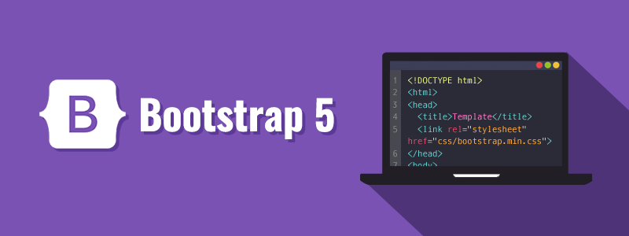

Flagship ProjectSystems Analysis • Booking Workflow • Payments
Medical Practice Booking Platform
A final flagship project that will document the business, system, payment and appointment workflows for a medical practice booking platform.
BRDBPMNBacklogUATSolution Design